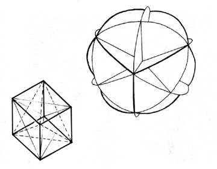

Fig. 454.01B The six great circles of the vector equilibrium disclose the six square faces of the spherical cube facets whose eight vertexes are centered in the areal centers of the vector equilibrium's eight spherical triangles.
Copyright © 1997 Estate of R. Buckminster Fuller